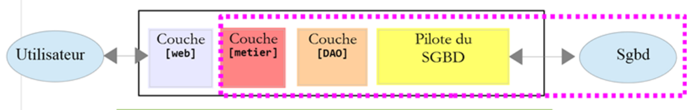
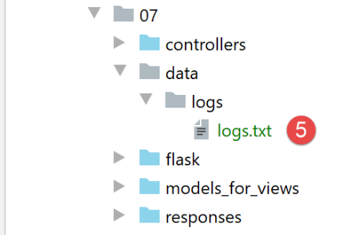
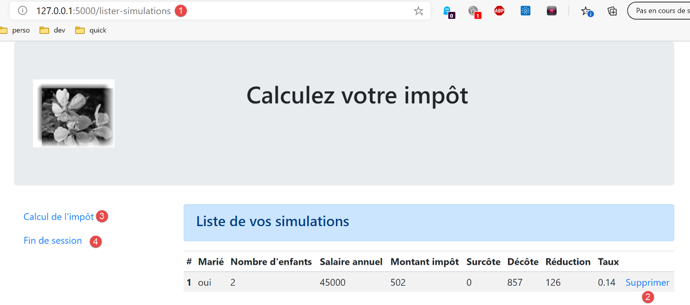
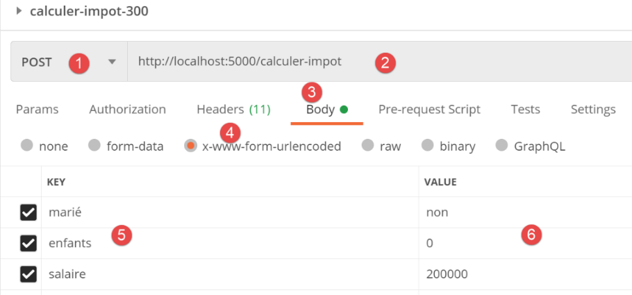
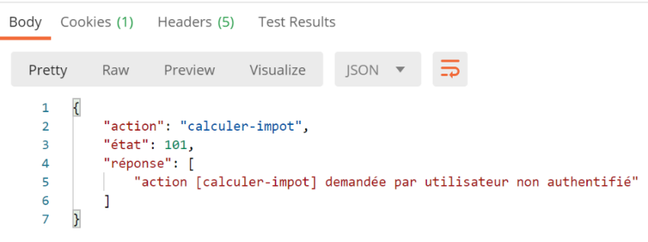
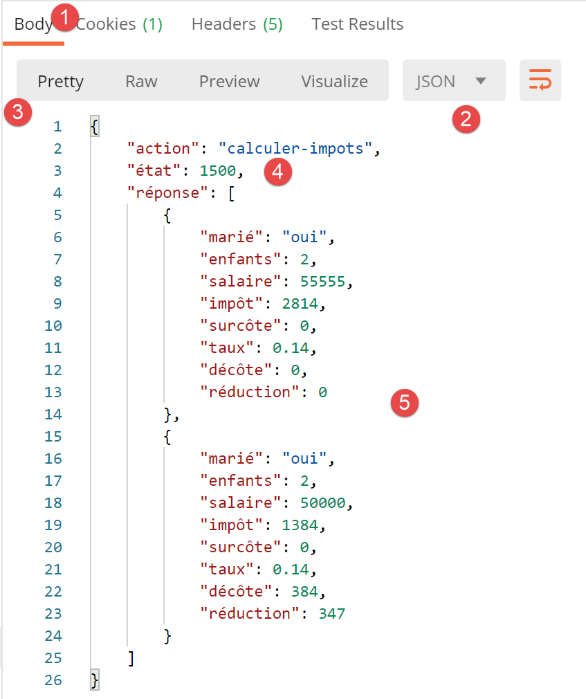

30. Ejercicio práctico: versión 12
En este capítulo vamos a desarrollar una aplicación web que siga la arquitectura MVC (Modelo-Vista-Controlador). La aplicación podrá entregar sus respuestas en tres formatos: jSON, XML, HTML. Hay un salto en la complejidad entre lo que vamos a hacer ahora y lo que se ha hecho anteriormente. Reutilizaremos la mayoría de los conceptos vistos hasta ahora y detallaremos todos los pasos que conducen a la aplicación final.
30.1. Arquitectura MVC
Vamos a implementar el modelo de arquitectura conocido como MVC (Modelo – Vista – Controlador) de la siguiente manera:
El procesamiento de una solicitud de un cliente se llevará a cabo de la siguiente manera:
- 1 - solicitud
Los URL solicitados tendrán el formato http://machine:port/action/param1/param2/… El [Contrôleur principal] utilizará un archivo de configuración para «enrutar» la solicitud hacia el controlador correcto. Para ello, utilizará el campo [action] del URL. El resto del URL y del [param1/param2/…] está formado por parámetros opcionales que se transmitirán a la acción. El C de MVC es aquí la cadena [Contrôleur principal, Contrôleur / Action]. Si ningún controlador puede procesar la acción solicitada, el servidor web responderá que no se encontró la acción solicitada.
- 2 - Procesamiento
- La acción seleccionada [2a] puede utilizar los parámetros parami que le ha transmitido [Contrôleur principal]. Estos pueden provenir de dos fuentes:
- la ruta [/param1/param2/…] de URL,
- de parámetros enviados en el cuerpo de la solicitud del cliente;
- al procesar la solicitud del usuario, la acción puede requerir la capa [métier] [2b]. Una vez procesada la solicitud del cliente, esta puede generar diversas respuestas. Un ejemplo clásico es:
- una respuesta de error si la solicitud no se pudo procesar correctamente;
- una respuesta de confirmación en caso contrario;
- el [Contrôleur / Action] enviará su respuesta [2c] al controlador principal, junto con un código de estado. Estos códigos de estado representarán de manera única el estado en el que se encuentra la aplicación. Será un código de éxito o un código de error;
- 3 - respuesta
- dependiendo de si el cliente solicitó una respuesta jSON, XML o HTML, el [Contrôleur principal] instanciará [3a] con el tipo de respuesta adecuado y le pedirá que envíe la respuesta al cliente. El [Contrôleur principal] le transmitirá tanto la respuesta como el código de estado proporcionados por el [Contrôleur / Action] que se ejecutó;
- si la respuesta deseada es del tipo jSON o XML, la respuesta seleccionada dará formato a la respuesta del [Contrôleur / Action] que se le proporcionó y la enviará a [3c]. El cliente capaz de procesar esta respuesta puede ser un script de consola de Python o un script de JavaScript alojado en una página HTML;
- si la respuesta deseada es del tipo HTML, la respuesta seleccionada elegirá una de las vistas HTML o [Vuei] mediante el código de estado que se le haya proporcionado. Es la V de MVC. A cada código de estado le corresponde una sola vista. Esta vista V mostrará la respuesta del [Contrôleur / Action] que se ejecutó. Esta vista utiliza HTML, CSS y JavaScript para presentar los datos de dicha respuesta. A estos datos se les denomina el modelo de la vista. Es la M de MVC. El cliente suele ser, en la mayoría de los casos, un navegador;
Ahora, aclaremos la relación entre la arquitectura web MVC y la arquitectura en capas. Dependiendo de la definición que se le dé al modelo, estos dos conceptos pueden estar relacionados o no. Tomemos como ejemplo una aplicación web MVC de una sola capa:

En el ejemplo anterior, cada una de las capas [Contrôleur / Action] integra una parte de las capas [métier] y [dao]. En la capa [web] sí existe una arquitectura MVC, pero la aplicación en su conjunto no tiene una arquitectura en capas. Aquí solo hay una capa, la capa web, que se encarga de todo.
Ahora, consideremos una arquitectura web multicapa:

La capa [web] puede implementarse sin seguir el modelo MVC. En ese caso, se trata efectivamente de una arquitectura multicapa, pero la capa web no implementa el modelo MVC.
Por ejemplo, en el entorno .NET, la capa [web] mencionadapuede implementarse con ASP.NET y MVC, con lo que se obtiene una arquitectura en capas con una capa [web] de tipo MVC. Una vez hecho esto, se puede reemplazar esta capa ASP.NET MVC por una capa ASP.NET clásica (WebForms) manteniendo el resto (negocio, DAO, controlador) tal cual. De esta manera, obtenemos una arquitectura en capas con una capa [web] que ya no es del tipo MVC.
En MVC, dijimos que el modelo M era el de la vista V, c.a.d, es decir, el conjunto de datos que muestra la vista V. Se proporciona otra definición del modelo M de MVC:

Muchos autores consideran que lo que se encuentra a la derecha de la capa [web] forma el modelo M de MVC. Para evitar ambigüedades, se puede hablar:
- del modelo del dominio cuando nos referimos a todo lo que se encuentra a la derecha de la capa [web];
- el modelo de la vista cuando nos referimos a los datos que muestra una vista V;
En lo que sigue, cuando hablemos de modelo, siempre nos referiremos al modelo de la vista.
30.2. Arquitectura de la aplicación cliente/servidor
La aplicación web tendrá la siguiente arquitectura:
- en [1], el servidor web tendrá dos tipos de clientes:
- en [2], un cliente de consola que intercambiará jSON y XML con el servidor;
- en [3], un navegador que recibirá HTML del servidor y lo mostrará;
- el servidor web [1] conserva las capas [métier] y [dao] de las versiones anteriores;
- el cliente web [2] se actualizará para incorporar las nuevas URL del servicio de la aplicación web;
- la aplicación HTML que se muestra en el navegador debe escribirse por completo;
Desarrollaremos la aplicación en varias etapas:
- desarrollaremos la versión jSON del servidor. Probaremos los servicios del servidor uno tras otro con un cliente Postman. Este método nos permite construir la estructura del servidor web sin preocuparnos por las vistas (=HTML) de la aplicación;
- después de probar el servidor jSON con Postman, lo probaremos con un cliente de consola;
- luego pasaremos a la versión XML del servidor. Hemos visto que el cambio de jSON a XML fue sencillo;
- por último, pasaremos a la versión HTML del servidor. Construiremos una arquitectura MVC y definiremos las vistas que se mostrarán. La aplicación HTML se probará tanto con el cliente Postman como con un navegador convencional;
30.3. La estructura del código del servidor

- en [1: el servidor web en su totalidad;
- en [2]: por el momento ignoraremos las carpetas [static, templates, tests_views], que corresponden a la versión HTML del servidor. Fuera de esta carpeta encontraremos el script principal [main] y su configuración;
- en [3], los controladores del servidor web. Serán instancias de clases;
 |  |
- en [4], la respuesta HTTP del servidor será manejada por clases;
- en [5], conservamos el archivo de registros de los servidores anteriores;
Cuando construyamos la versión HTML del servidor, intervendrán otras carpetas:
 |  |
- en [6], los elementos estáticos de la aplicación HTML;
- en [7], las plantillas de la aplicación HTML, desglosadas en vistas [9] y en fragmentos de vista [8];
- en [9], las clases que implementan los modelos de las vistas;
30.4. Los URL del servicio de la aplicación
Para desarrollar el servidor web, procederemos de la siguiente manera:
- a partir de las vistas de la aplicación HTML, definiremos las acciones que debe implementar la aplicación web. Aquí utilizaremos las vistas reales, pero podrían ser simplemente vistas en papel;
- a partir de estas acciones, definiremos los URL de servicio de la aplicación HTML;
- implementaremos estas URL de servicio con un servidor que entregue jSON. Esto permite definir la estructura del servidor web sin preocuparnos por las páginas HTML que se van a entregar. Probaremos estos servicios URL con Postman;
- luego probaremos nuestro servidor jSON con un cliente de consola;
- una vez que el servidor jSON haya sido validado, pasaremos a la programación de la aplicación HTML;
La primera vista será la de autenticación:

- la acción que conduce a esta primera vista se llamará [init-session] [1];
- Al hacer clic en el botón [Valider] se activará la acción [authentifier-utilisateur] con dos parámetros enviados: [2-3];
La vista del cálculo del impuesto:

- en [1], la acción [authentifier-utilisateur] que condujo a esta vista;
- en [2], al hacer clic en el botón [Valider] se activa la ejecución de la acción [calculer-impot] con tres parámetros enviados: [2-5];
- al hacer clic en el enlace [6] se activa la acción [lister-simulations] sin parámetros;
- al hacer clic en el enlace [7] se activa la acción [fin-session] sin parámetros;
La tercera vista muestra las simulaciones realizadas por el usuario autenticado:

- en [3], la acción [lister-simulations] que condujo a esta vista;
- en [2], al hacer clic en el enlace [Supprimer] se activa la acción [supprimer-simulation] con un parámetro: el número de la simulación que se eliminará de la lista;
- al hacer clic en el enlace [3] se activa la acción [afficher-calcul-impot] sin parámetros, que vuelve a mostrar la vista del cálculo del impuesto;
- al hacer clic en el enlace [4] se activa la acción [fin-session] sin parámetros;
Con esta información inicial, podemos definir las diferentes acciones de servicio del servidor URL:
Acción | Función | Contexto de ejecución |
/init-session | Sirve para establecer el tipo (json, xml, html) de las respuestas deseadas | Solicitud GET Se puede emitir en cualquier momento |
/autenticar-usuario | Autoriza o no a un usuario a iniciar sesión | Solicitud POST. La solicitud debe tener dos parámetros enviados por POST [user, password] Solo se puede emitir si se conoce el tipo de sesión (json, xml, html) |
/calcular-impuesto | Realiza una simulación del cálculo de impuestos | Solicitud POST. La solicitud debe incluir tres parámetros enviados por POST: [marié, enfants, salaire] Solo se puede emitir si se conoce el tipo de sesión (json, xml, html) y el usuario está autenticado |
/listar-simulaciones | Solicita ver la lista de simulaciones realizadas desde el inicio de la sesión | Solicitud GET. Solo se puede enviar si se conoce el tipo de sesión (json, xml, html) y el usuario está autenticado |
/eliminar-simulación/número | Elimina una simulación de la lista de simulaciones | Solicitud GET. Solo se puede emitir si se conoce el tipo de sesión (json, xml, html) y el usuario está autenticado |
/mostrar-cálculo-impuesto | Muestra la página HTML del cálculo de impuestos | Solicitud GET. Solo se puede emitir si se conoce el tipo de sesión (json, xml, html) y el usuario está autenticado |
/fin-session | Finaliza la sesión de simulaciones. | Técnicamente, se elimina la sesión web anterior y se crea una nueva sesión Solo se puede emitir si se conoce el tipo de sesión (json, xml, html) y el usuario está autenticado |
Estos diferentes URL de servicio se utilizarán tanto para el servidor HTML como para los servidores jSON o XML. Dos URL se utilizarán únicamente para estos dos últimos servidores: se trata de los URL de la versión anterior del cliente/servidor web que retomamos aquí:
Acción | Función | Contexto de ejecución |
/get-admindata | Devuelve los datos fiscales que permiten calcular el impuesto | Consulta GET. Solo se utiliza si el tipo de sesión es json o xml. El usuario debe estar autenticado |
/calcular-impuestos | Realiza el cálculo del impuesto de una lista de contribuyentes enviada en jSON | Consulta GET. Solo se utiliza si el tipo de sesión es json o xml. El usuario debe estar autenticado |
Todos los controladores asociados a estas acciones procederán de la misma manera:
- verificarán sus parámetros. Estos se encuentran en el objeto:
- [request.path] para los parámetros presentes en el URL en el formato [/action/param1/param2/…];
- en el objeto [request.form] para aquellos que se transmiten en [x-www-form-urlencoded] en el cuerpo de la solicitud;
- en el objeto [request.data] para aquellos que se transmiten en jSON en el cuerpo de la solicitud;
- un controlador es similar a una función o método que verifica la validez de sus parámetros. Sin embargo, en el caso del controlador es un poco más complicado:
- los parámetros esperados pueden faltar;
- los parámetros que recupera el controlador son cadenas de caracteres. Si el parámetro esperado es un número, entonces el controlador debe verificar que la cadena de caracteres del parámetro sea efectivamente la de un número;
- una vez verificado que los parámetros esperados están presentes y son sintácticamente correctos, hay que verificar que sean válidos en el contexto de ejecución actual. Este contexto se encuentra en la sesión. El ejemplo de la autenticación es un ejemplo de contexto de ejecución. Ciertas acciones solo deben procesarse una vez que el cliente se haya autenticado. Por lo general, una clave en la sesión indica si esta autenticación se ha realizado o no;
- una vez realizadas las verificaciones anteriores, el controlador secundario puede comenzar a trabajar. Este proceso de verificación de los parámetros es muy importante. No se puede aceptar que un cliente nos envíe cualquier cosa en cualquier momento del ciclo de vida de la aplicación. Debemos controlar totalmente dicho ciclo;
- una vez completada su tarea, el controlador secundario devuelve un diccionario con las claves [action, état, réponse] al controlador principal que lo llamó:
- [action] es la acción que acaba de ejecutarse;
- [état] es un número de tres dígitos que indica el resultado del procesamiento de la acción:
- [x00] indicará que el procesamiento se realizó con éxito;
- [x01] indicará que el procesamiento falló;
- [réponse] es el diccionario de resultados en el formato {‘respuesta’:objeto}. El objeto tendrá estructuras diferentes según la acción procesada;
Ahora repasaremos los distintos controladores o, lo que es lo mismo, las distintas acciones que estos controladores procesan y que marcan el ritmo de la aplicación web.
30.5. Configuración del servidor

La configuración de la base de datos [config_database], así como la de las capas del servidor [config_layers], son idénticas a las de las versiones anteriores. En el archivo [config] aparece nueva información:
def configure(config: dict) -> dict:
import os
# paso 1 ------
# carpeta de este archivo
script_dir = os.path.dirname(os.path.abspath(__file__))
# ruta raíz
root_dir = "C:/Data/st-2020/dev/python/cours-2020/python3-flask-2020"
# dependencias
absolute_dependencies = [
# carpetas del proyecto
# BaseEntity, MyException
f"{root_dir}/classes/02/entities",
# InterfaceImpôtsDao, InterfaceImpôtsMétier, InterfaceImpôtsUi
f"{root_dir}/impots/v04/interfaces",
# AbstractImpôtsdao, ImpôtsConsole, ImpôtsMétier
f"{root_dir}/impots/v04/services",
# ImpotsDaoWithAdminDataInDatabase
f"{root_dir}/impots/v05/services",
# AdminData, ImpôtsError, TaxPayer
f"{root_dir}/impots/v04/entities",
# Constantes, tramos
f"{root_dir}/impots/v05/entities",
# Registrador, SendAdminMail
f"{root_dir}/impots/http-servers/02/utilities",
# scripts [config_database, config_layers]
script_dir,
# controladores
f"{script_dir}/../controllers",
# respuestas HTTP
f"{script_dir}/../responses",
# plantillas de vistas
f"{script_dir}/../models_for_views",
]
# se establece el syspath
from myutils import set_syspath
set_syspath(absolute_dependencies)
# dependencias del servidor web
# los controladores
from AfficherCalculImpotController import AfficherCalculImpotController
from AuthentifierUtilisateurController import AuthentifierUtilisateurController
from CalculerImpotController import CalculerImpotController
from CalculerImpotsController import CalculerImpotsController
from FinSessionController import FinSessionController
from GetAdminDataController import GetAdminDataController
from InitSessionController import InitSessionController
from ListerSimulationsController import ListerSimulationsController
from MainController import MainController
from SupprimerSimulationController import SupprimerSimulationController
# las respuestas HTTP
from HtmlResponse import HtmlResponse
from JsonResponse import JsonResponse
from XmlResponse import XmlResponse
# las plantillas de las vistas
from ModelForAuthentificationView import ModelForAuthentificationView
from ModelForCalculImpotView import ModelForCalculImpotView
from ModelForErreursView import ModelForErreursView
from ModelForListeSimulationsView import ModelForListeSimulationsView
# paso 2 ------
# Configuración de la aplicación
config.update({
# usuarios autorizados a utilizar la aplicación
"users": [
{
"login": "admin",
"password": "admin"
}
],
# archivo de registros
"logsFilename": f"{script_dir}/../data/logs/logs.txt",
# Configuración del servidor SMTP
"adminMail": {
# servidor SMTP
"smtp-server": "localhost",
# puerto del servidor SMTP
"smtp-port": "25",
# administrador
"from": "guest@localhost.com",
"to": "guest@localhost.com",
# asunto del correo
"subject": "plantage du serveur de calcul d'impôts",
# TLS en «True» si el servidor SMTP requiere autorización, en «False» en caso contrario
"tls": False
},
# duración de la pausa del hilo en segundos
"sleep_time": 0,
# acciones permitidas y sus controladores
"controllers": {
# inicialización de una sesión de cálculo
"init-session": InitSessionController(),
# autenticación de un usuario
"authentifier-utilisateur": AuthentifierUtilisateurController(),
# cálculo del impuesto en modo individual
"calculer-impot": CalculerImpotController(),
# cálculo del impuesto en modo por lotes
"calculer-impots": CalculerImpotsController(),
# lista de simulaciones
"lister-simulations": ListerSimulationsController(),
# eliminación de una simulación
"supprimer-simulation": SupprimerSimulationController(),
# fin de la sesión de cálculo
"fin-session": FinSessionController(),
# visualización de la vista de cálculo del impuesto
"afficher-calcul-impot": AfficherCalculImpotController(),
# obtención de datos de la administración tributaria
"get-admindata": GetAdminDataController(),
# controlador principal
"main-controller": MainController()
},
# los diferentes tipos de respuesta (json, xml, html)
"responses": {
"json": JsonResponse(),
"html": HtmlResponse(),
"xml": XmlResponse()
},
# las vistas HTML y sus plantillas dependen del estado devuelto por el controlador
"views": [
{
# vista de autenticación
"états": [
# /init-session (éxito)
700,
# /autenticar-usuario fallido
201
],
"view_name": "views/vue-authentification.html",
"model_for_view": ModelForAuthentificationView()
},
{
# vista de cálculo del impuesto
"états": [
# /autenticar-usuario éxito
200,
# /calcular-impuestos correcto
300,
# /calcular-impuesto fallido
301,
# /mostrar-cálculo-de-impuestos
800
],
"view_name": "views/vue-calcul-impot.html",
"model_for_view": ModelForCalculImpotView()
},
{
# vista de la lista de simulaciones
"états": [
# /listar-simulaciones
500,
# /eliminar-simulación
600
],
"view_name": "views/vue-liste-simulations.html",
"model_for_view": ModelForListeSimulationsView()
}
],
# vista de errores inesperados
"view-erreurs": {
"view_name": "views/vue-erreurs.html",
"model_for_view": ModelForErreursView()
},
# redirecciones
"redirections": [
{
"états": [
400, # /fin de sesión exitosa
],
# redirección a
"to": "/init-session/html",
}
],
}
)
# paso 3 ------
# configuración de la base de datos
import config_database
config["database"] = config_database.configure(config)
# paso 4 ------
# instanciación de las capas de la aplicación
import config_layers
config['layers'] = config_layers.configure(config)
# se devuelve la configuración
return config
- hasta la línea 41, encontramos elementos habituales;
- líneas 43-66: al llegar a la línea 43, se define la ruta de Python del servidor. Entonces se pueden importar las dependencias del proyecto:
- líneas 45-55: la lista de controladores;
- líneas 57-60: la lista de respuestas HTTP;
- líneas 62-66: la lista de plantillas de vista;
- líneas 68-189: la configuración de la aplicación con una serie de constantes;
- líneas 71-98: ya conocemos estas líneas, que aparecieron en versiones anteriores;
- líneas 101-122: el diccionario de controladores:
- las claves son los nombres de las acciones;
- los valores son una instancia del controlador que debe gestionar esa acción. Cada controlador se instancia en un solo ejemplar (singleton). La misma instancia será ejecutada por diferentes hilos del servidor. Por lo tanto, habrá que prestar atención a los datos compartidos que cada controlador pudiera querer modificar;
- líneas 125-129: el diccionario de las tres respuestas posibles HTTP:
- las claves son el tipo de respuesta que desea el cliente (jSON, xml, html);
- los valores son una instancia de la respuesta HTTP. Cada generador de respuesta se instancia en un solo ejemplar (singleton). El mismo generador será ejecutado por diferentes hilos del servidor. Por lo tanto, habrá que prestar atención a los datos compartidos que cada generador pudiera querer modificar;
- líneas 132-186: configuración de las vistas HTML. Por el momento, ignoramos estas líneas;
- líneas 191-202: ya hemos visto estas líneas en versiones anteriores;
30.6. Recorrido de una solicitud del cliente dentro del servidor

Vamos a seguir el recorrido de una solicitud del cliente que llega al servidor hasta la respuesta HTTP enviada de regreso. Sigue el recorrido del servidor MVC.
30.6.1. El script [main]

El script [main] es idéntico en muchos aspectos al de las versiones anteriores. No obstante, lo presentamos en su totalidad para partir de una base sólida:
# se espera un parámetro mysql o pgres
import sys
syntaxe = f"{sys.argv[0]} mysql / pgres"
erreur = len(sys.argv) != 2
if not erreur:
sgbd = sys.argv[1].lower()
erreur = sgbd != "mysql" and sgbd != "pgres"
if erreur:
print(f"syntaxe : {syntaxe}")
sys.exit()
# se configura la aplicación
import config
config = config.configure({'sgbd': sgbd})
# dependencias
from flask import request, Flask, session, url_for, redirect
from flask_api import status
from SendAdminMail import SendAdminMail
from myutils import json_response
from Logger import Logger
import threading
import time
from random import randint
from ImpôtsError import ImpôtsError
import os
# envío de un correo electrónico al administrador
def send_adminmail(config: dict, message: str):
# se envía un correo electrónico al administrador de la aplicación
config_mail = config["adminMail"]
config_mail["logger"] = config['logger']
SendAdminMail.send(config_mail, message)
# verificación del archivo de registros
logger = None
erreur = False
message_erreur = None
try:
# registrador
logger = Logger(config["logsFilename"])
except BaseException as exception:
# registro de consola
print(f"L'erreur suivante s'est produite : {exception}")
# se anota el error
erreur = True
message_erreur = f"{exception}"
# se guarda el registrador en la configuración
config['logger'] = logger
# gestión del error
if erreur:
# correo electrónico al administrador
send_adminmail(config, message_erreur)
# fin de la aplicación
sys.exit(1)
# registro de inicio
log = "[serveur] démarrage du serveur"
logger.write(f"{log}\n")
print(log)
# Recuperación de datos de la administración tributaria
erreur = False
try:
# admindata será un dato de alcance de la aplicación de solo lectura
config["admindata"] = config["layers"]["dao"].get_admindata().asdict()
# registro de éxito
logger.write("[serveur] connexion à la base de données réussie\n")
except ImpôtsError as ex:
# se registra el error
erreur = True
# registro de error
log = f"L'erreur suivante s'est produite : {ex}"
# consola
print(log)
# archivo de registros
logger.write(f"{log}\n")
# correo al administrador
send_adminmail(config, log)
# el hilo principal ya no necesita el registrador
logger.close()
# si hubo un error, se detiene
if erreur:
sys.exit(2)
# aplicación Flask
app = Flask(__name__, template_folder="templates", static_folder="static")
# clave secreta de la sesión
app.secret_key = os.urandom(12).hex()
# el controlador principal
def front_controller() -> tuple:
# se procesa la solicitud
logger = None
…
@app.route('/', methods=['GET'])
def index() -> tuple:
# redirección a /init-session/html
return redirect(url_for("init_session", type_response="html"), status.HTTP_302_FOUND)
# init-session
@app.route('/init-session/<string:type_response>', methods=['GET'])
def init_session(type_response: str) -> tuple:
# se ejecuta el controlador asociado a la acción
return front_controller()
# autenticar-usuario
@app.route('/authentifier-utilisateur', methods=['POST'])
def authentifier_utilisateur() -> tuple:
# se ejecuta el controlador asociado a la acción
return front_controller()
# calcular-impuesto
@app.route('/calculer-impot', methods=['POST'])
def calculer_impot() -> tuple:
# se ejecuta el controlador asociado a la acción
return front_controller()
# listar-simulaciones
@app.route('/lister-simulations', methods=['GET'])
def lister_simulations() -> tuple:
# se ejecuta el controlador asociado a la acción
return front_controller()
# eliminar-simulación
@app.route('/supprimer-simulation/<int:numero>', methods=['GET'])
def supprimer_simulation(numero: int) -> tuple:
# se ejecuta el controlador asociado a la acción
return front_controller()
# fin-sesión
@app.route('/fin-session', methods=['GET'])
def fin_session() -> tuple:
# se ejecuta el controlador asociado a la acción
return front_controller()
# mostrar-cálculo-impuestos
@app.route('/afficher-calcul-impot', methods=['GET'])
def afficher_calcul_impot() -> tuple:
# se ejecuta el controlador asociado a la acción
return front_controller()
# obtener-datos-de-administración
@app.route('/get-admindata/<int:numero>', methods=['GET'])
def get_admindata() -> tuple:
# se ejecuta el controlador asociado a la acción
return front_controller()
# solo main
if __name__ == '__main__':
# se inicia el servidor
app.config.update(ENV="development", DEBUG=True)
app.run(threaded=True)
- líneas 1-92: todas estas líneas ya se han visto y explicado;
- línea 92: el servidor gestionará una sesión. Por lo tanto, necesitamos una clave secreta. Para cada usuario, incluiremos dos datos en la sesión:
- si el usuario se ha autenticado correctamente;
- cada vez que realice un cálculo de impuestos, los resultados de dicho cálculo se colocarán en una lista que llamaremos la lista de simulaciones del usuario. Esta lista se guardará en la sesión;
- líneas 100-151: la lista de URL de servicio del servidor. Las funciones asociadas sirven como filtro: todas las URL que no estén presentes en esta lista serán rechazadas por el servidor Flask con el error [404 NOT FOUND]. Una vez superado este filtrado, la solicitud se transmite sistemáticamente a un «Front Controller» implementado por la función [front_controller] de las líneas 94-98, que presentaremos en breve;
- líneas 100-103: gestión de la ruta [/]. El punto de entrada de la aplicación web será la función URL de la línea 107. Asimismo, en la línea 103, redirigimos al cliente hacia esta función URL:
- la función [url_for] se importa en la línea 18. Aquí tiene dos parámetros:
- el primer parámetro es el nombre de una de las funciones de enrutamiento, en este caso la de la línea 107. Se observa que esta función espera un parámetro [type_response], que es el tipo de respuesta (json, xml, html) que desea el cliente;
- el segundo parámetro retoma el nombre del parámetro de la línea 107, [type_response], y le asigna un valor. Si hubiera otros parámetros, se repetiría la operación para cada uno de ellos;
- devuelve el URL asociado a la función designada por los dos parámetros que se le han proporcionado. En este caso, dará como resultado el URL de la línea 106, donde el parámetro se reemplaza por su valor [/init-session/html];
- la función [redirect] se importó en la línea 18. Su función es enviar un encabezado de redirección HTTP al cliente:
- el primer parámetro es el URL al que se debe redirigir al cliente;
- el segundo parámetro es el código de estado de la respuesta HTTP enviada al cliente. El código [status.HTTP_302_FOUND] corresponde a una redirección HTTP;
La función [front_controller] de las líneas 94 a 98 realiza los primeros procesos de la solicitud del cliente:
# el controlador principal
def front_controller() -> tuple:
# se procesa la solicitud
logger = None
try:
# registrador
logger = Logger(config["logsFilename"])
# se almacena en una configuración asociada al hilo
thread_config = {"logger": logger}
thread_name = threading.current_thread().name
config[thread_name] = {"config": thread_config}
# se registra la solicitud
logger.write(f"[ front_controller] requête : {request}\n")
# se interrumpe el hilo si así se ha solicitado
sleep_time = config["sleep_time"]
if sleep_time != 0:
# la pausa es aleatoria para que algunos hilos se interrumpan y otros no
aléa = randint(0, 1)
if aléa == 1:
# registro antes de la pausa
logger.write(f"[ front_controller] mis en pause du thread pendant {sleep_time} seconde(s)\n")
# pausa
time.sleep(sleep_time)
# se reenvía la solicitud al controlador principal
main_controller = config['controllers']["main-controller"]
résultat, status_code = main_controller.execute(request, session, config)
# se registra el resultado enviado al cliente
log = f"[front_controller] {résultat}\n"
logger.write(log)
# ¿Hubo un error fatal?
if status_code == status.HTTP_500_INTERNAL_SERVER_ERROR:
# se envía un correo electrónico al administrador de la aplicación
send_adminmail(config, log)
# se determina el tipo deseado para la respuesta
if session.get('typeResponse') is None:
# Aún no se ha establecido el tipo de sesión; será jSON
type_response = 'json'
else:
type_response = session['typeResponse']
# se genera la respuesta que se enviará
response_builder = config["responses"][type_response]
response, status_code = response_builder \
.build_http_response(request, session, config, status_code, résultat)
# se envía la respuesta
return response, status_code
except BaseException as erreur:
# se trata de un error inesperado; se registra el error si es posible
if logger:
logger.write(f"[ front_controller] {erreur}")
# se prepara la respuesta para el cliente
résultat = {"réponse": {"erreurs": [f"{erreur}"]}}
# se envía una respuesta en jSON
return json_response(résultat, status.HTTP_500_INTERNAL_SERVER_ERROR)
finally:
# se cierra el archivo de registros si se ha abierto
if logger:
logger.close()
- líneas 1-57: ya conocemos este código. Era, por ejemplo, el código de la función llamada [main] en el script [main] de la versión anterior. Solo hay que destacar una cosa: el controlador utilizado en las líneas 25-26:
- línea 25: se recupera de la configuración la instancia del controlador asociada al nombre [main-controller]. Se trata de las siguientes líneas:
# dependencias del servidor web
# los controladores
…
from MainController import MainController
# acciones autorizadas y sus controladores
"controllers": {
…,
# controlador principal
"main-controller": MainController()
},
- (continuación)
- línea 10 anterior, se observará que se recupera una instancia de clase;
- línea 26: se le solicita al controlador [MainController] que procese la solicitud;
- líneas 30-45: la respuesta devuelta por el controlador [MainController] se envía al cliente. Volveremos a estas líneas un poco más adelante;
La función [front_controller] y, posteriormente, la clase [MainController] se encargan de realizar el trabajo común a todas las solicitudes:
En el diagrama anterior, aún nos encontramos en la fase 1 del procesamiento de la solicitud. El controlador principal [MainController] continuará con el paso 1.
30.6.2. El controlador principal [MainController]
El controlador principal [MainController] continúa el trabajo iniciado por la función [front_controller]:
Todos los controladores implementan la siguiente interfaz [InterfaceController] [2]:

from abc import ABC, abstractmethod
from werkzeug.local import LocalProxy
class InterfaceController(ABC):
@abstractmethod
def execute(self, request: LocalProxy, session: LocalProxy, config: dict) -> (dict, int):
pass
- La interfaz [InterfaceController] solo define el único método [execute] de la línea 8. Este método recibe tres parámetros:
- [request]: la solicitud del cliente;
- [session]: la sesión del cliente;
- [config]: la configuración de la aplicación;
El método [execute] devuelve una tupla de dos elementos:
- el primero es el diccionario de resultados en el formato {‘acción’: acción, ‘estado’: estado, ‘respuesta’: resultados};
- el segundo es el código de estado HTTP que se debe devolver al cliente;
El controlador principal [MainController] [1] implementa la interfaz [InterfaceController] de la siguiente manera:
# importación de dependencias
from flask_api import status
from werkzeug.local import LocalProxy
# controladores de la aplicación web
from InterfaceController import InterfaceController
class MainController(InterfaceController):
def execute(self, request: LocalProxy, session: LocalProxy, config: dict) -> (dict, int):
# se recuperan los elementos de la ruta
params = request.path.split('/')
action = params[1]
# errores
erreur = False
# se debe conocer el tipo de sesión antes de realizar ciertas acciones
type_response = session.get('typeResponse')
if type_response is None and action != "init-session":
# se registra el error
résultat = {"action": action, "état": 101,
"réponse": ["pas de session en cours. Commencer par action [init-session]"]}
erreur = True
# Para ciertas acciones, se debe estar autenticado
user = session.get('user')
if not erreur and user is None and action not in ["init-session", "authentifier-utilisateur"]:
# se registra el error
résultat = {"action": action, "état": 101,
"réponse": [f"action [{action}] demandée par utilisateur non authentifié"]}
erreur = True
# ¿Hay algún error?
if erreur:
# se devuelve un mensaje de error
return résultat, status.HTTP_400_BAD_REQUEST
else:
# se ejecuta el controlador asociado a la acción
controller = config["controllers"][action]
résultat, status_code = controller.execute(request, session, config)
return résultat, status_code
El controlador [MainController] realiza las primeras verificaciones de la validez de la solicitud.
- líneas 11-13: el controlador comienza por recuperar la acción solicitada por el cliente. Cabe recordar que las URL de servicio tienen el formato [/action/param1/param2/…] y que esta URL se encuentra en [request.path];
- líneas 17-23: la acción [init-session] sirve para inicializar el tipo de respuesta (json, xml, html) que desea el cliente. Esta información se almacena en la sesión asociada a la clave [typeRéponse]. Por lo tanto, si la acción no es [init-session], la sesión debe contener la clave [typeRéponse]; de lo contrario, la solicitud es incorrecta;
- líneas 21-22: la estructura del resultado devuelto por cada controlador, en este caso un resultado de error:
- [action]: es el nombre de la acción en curso. Esto permitirá obtener su nombre al registrar el resultado de la solicitud;
- [état]: es un código de estado de tres dígitos:
- [x00] indica éxito;
- [x01] indica un error;
- [réponse]: es la respuesta a la consulta. Su naturaleza es específica para cada consulta;
- líneas 24-30: la acción [authentifier-utilisateur] sirve para autenticar al usuario. Si tiene éxito, se coloca una clave [user=True] en la sesión del usuario. Ciertas acciones de servicio URL solo son accesibles para un usuario autenticado. Eso es lo que se verifica aquí;
- línea 26: solo las acciones [init-session] y [authentifier-utilisateur] pueden ser realizadas por un usuario que aún no se ha autenticado;
- líneas 28-29: el resultado que se debe enviar en caso de error;
- líneas 32-34: si se ha producido alguno de los dos errores anteriores, se envía la respuesta de error al cliente con el estado HTTP 400 BAD REQUEST;
- líneas 35-39: si no se ha producido ningún error, se le pasa el control al controlador encargado de procesar la acción en curso. Su instancia se encuentra en la configuración de la aplicación;
La clase [MainController] continúa el trabajo de la función [front_controller]: entre ambas, reúnen todo lo que se puede factorizar en el procesamiento de las solicitudes, esperando hasta el último momento para pasar la solicitud a un controlador específico. La distribución del código entre la función [front_controller] y la clase [MainController] es totalmente subjetiva. En este caso, quise conservar lo logrado en la versión anterior: la función [front_controller] ya existía con el nombre [main]. En la práctica, se podría:
- poner todo en la función [front_controller] y eliminar la clase [MainController];
- poner todo en la clase [MainController] y eliminar la función [front_controller]. Yo optaría más bien por esta solución, ya que tiene la ventaja de aligerar el código del script principal [main];
30.7. Procesamiento específico para una acción
Volvamos a la arquitectura MVC de la aplicación:
Todavía nos encontramos en el paso 1 anterior. Si no se ha producido ningún error, comenzará el paso 2. La solicitud se ha transmitido al controlador específico de la acción solicitada por la solicitud. Supongamos que esta acción es [/init-session], definida por la ruta:
# inicialización de sesión
@app.route('/init-session/<string:type_response>', methods=['GET'])
def init_session(type_response: str) -> tuple:
# se ejecuta el controlador asociado a la acción
return front_controller()
Esta acción está vinculada a un controlador en la configuración [config]:
# acciones autorizadas y sus controladores
"controllers": {
# inicialización de una sesión de cálculo
"init-session": InitSessionController(),
…
},
Por lo tanto, el controlador [InitSessionController] (línea 4) toma el control. Su código es el siguiente:
from flask_api import status
from werkzeug.local import LocalProxy
from InterfaceController import InterfaceController
class InitSessionController(InterfaceController):
def execute(self, request: LocalProxy, session: LocalProxy, config: dict) -> (dict, int):
# se recuperan los elementos de la ruta
dummy, action, type_response = request.path.split('/')
# Al inicio, no hay errores
erreur = False
# verificación del tipo de respuesta
if type_response not in config['responses'].keys():
erreur = True
résultat = {"action": action, "état": 701,
"réponse": [f"paramètre [type={type_response}] invalide"]}
# si no hay error
if not erreur:
# se asigna el tipo de sesión a la sesión de Flask
session['typeResponse'] = type_response
résultat = {"action": action, "état": 700,
"réponse": [f"session démarrée avec le type de réponse {type_response}"]}
return résultat, status.HTTP_200_OK
else:
return résultat, status.HTTP_400_BAD_REQUEST
- línea 6: al igual que los demás controladores, el controlador [InitSessionController] implementa la interfaz [InterfaceController];
- línea 10: el URL es de tipo [/init-session/type_response]. Se recupera la acción [init-session] y el tipo de respuesta deseado;
- línea 15: el tipo de respuesta deseado solo puede ser uno de los que se encuentran en la configuración de respuestas:
# los diferentes tipos de respuesta (json, xml, html)
"responses": {
"json": JsonResponse(),
"html": HtmlResponse(),
"xml": XmlResponse()
},
- si no es así, se prepara una respuesta de error 701 (línea 17);
- líneas 20-25: caso en el que el tipo de respuesta deseado es válido;
- línea 22: se guarda en la sesión el tipo de respuesta deseado. De hecho, habrá que recordarlo para las solicitudes siguientes;
- líneas 23-24: se prepara una respuesta de éxito 700;
- línea 25: se devuelve la respuesta de éxito al código que realiza la llamada;
- línea 27: si se produjo un error, se devuelve la respuesta de error al código que realiza la llamada;
30.8. Elaboración de la respuesta HTTP del servidor
Volvamos a la arquitectura MVC de la aplicación:
Acabamos de ver los pasos 1 y 2. Nos hemos encontrado con tres códigos de estado:
- 700: /init-session se realizó con éxito;
- 701: /init-session falló;
- 101: solicitud inválida, ya sea porque la sesión no se ha inicializado o porque el usuario no está autenticado;
Veamos cómo se enviará la respuesta del servidor al cliente durante el paso 3 anterior. Esto ocurre en la función [front_controller] del script [main]:
# el controlador principal
def front_controller() -> tuple:
# se procesa la solicitud
logger = None
try:
# registrador
logger = Logger(config["logsFilename"])
# se almacena en una configuración asociada al hilo
thread_config = {"logger": logger}
thread_name = threading.current_thread().name
config[thread_name] = {"config": thread_config}
# se registra la solicitud
logger.write(f"[ front_controller] requête : {request}\n")
# se interrumpe el hilo si así se ha solicitado
sleep_time = config["sleep_time"]
if sleep_time != 0:
# la pausa es aleatoria para que algunos hilos se interrumpan y otros no
aléa = randint(0, 1)
if aléa == 1:
# registro antes de la pausa
logger.write(f"[ front_controller] mis en pause du thread pendant {sleep_time} seconde(s)\n")
# pausa
time.sleep(sleep_time)
# se reenvía la solicitud al controlador principal
main_controller = config['controllers']["main-controller"]
résultat, status_code = main_controller.execute(request, session, config)
# se registra el resultado enviado al cliente
log = f"[front_controller] {résultat}\n"
logger.write(log)
# ¿Hubo un error fatal?
if status_code == status.HTTP_500_INTERNAL_SERVER_ERROR:
# se envía un correo electrónico al administrador de la aplicación
send_adminmail(config, log)
# se determina el tipo deseado para la respuesta
if session.get('typeResponse') is None:
# Aún no se ha establecido el tipo de sesión; será jSON
type_response = 'json'
else:
type_response = session['typeResponse']
# se genera la respuesta que se enviará
response_builder = config["responses"][type_response]
response, status_code = response_builder \
.build_http_response(request, session, config, status_code, résultat)
# se envía la respuesta
return response, status_code
except BaseException as erreur:
# es un error inesperado; se registra el error si es posible
if logger:
logger.write(f"[ front_controller] {erreur}")
# se prepara la respuesta para el cliente
résultat = {"réponse": {"erreurs": [f"{erreur}"]}}
# se envía una respuesta en jSON
return json_response(résultat, status.HTTP_500_INTERNAL_SERVER_ERROR)
finally:
# se cierra el archivo de registros si se había abierto
if logger:
logger.close()
- Estamos en la línea 26: el controlador principal ha devuelto su respuesta de error;
- líneas 27-29: independientemente de la respuesta del controlador principal (éxito o fracaso), esta respuesta se registra en el archivo de registros;
- líneas 30-33: al igual que en versiones anteriores, si el estado HTTP es [500 INTERNAL SERVER ERROR], se envía un correo electrónico al administrador de la aplicación con el registro del error;
- líneas 34-39: se enviará la respuesta HTTP y el resultado devuelto por el controlador se incluirá en el cuerpo de esta respuesta. Necesitamos saber en qué formato (json, xml, html) el cliente desea recibir esta respuesta. Buscamos el tipo de respuesta deseado en la sesión. Si no está ahí, entonces establecemos arbitrariamente este tipo como jSON;
- líneas 40-43: se construye la respuesta HTTP;
En el archivo de configuración, cada tipo de respuesta (json, xml, html) se ha asociado a una instancia de clase:
# los diferentes tipos de respuesta (json, xml, html)
"responses": {
"json": JsonResponse(),
"html": HtmlResponse(),
"xml": XmlResponse()
},
Las clases de respuesta se encuentran en la carpeta [responses] del árbol de directorios del servidor:

Cada clase de respuesta implementa la siguiente interfaz [InterfaceResponse]:
from abc import ABC, abstractmethod
from flask.wrappers import Response
from werkzeug.local import LocalProxy
class InterfaceResponse(ABC):
@abstractmethod
def build_http_response(self, request: LocalProxy, session: LocalProxy, config: dict, status_code: int,
résultat: dict) -> (Response, int):
pass
- líneas 8-11: la interfaz [InterfaceResponse] define un único método [build_http_response] con los siguientes parámetros:
- [request, session, config]: estos son los parámetros que recibe el controlador de la acción;
- [résultat, status_code]: son los resultados generados por el controlador de la acción;
A continuación, presentaremos la respuesta jSON. Esta es generada por la siguiente clase [JsonResponse]:
import json
from flask import make_response
from flask.wrappers import Response
from werkzeug.local import LocalProxy
from InterfaceResponse import InterfaceResponse
class JsonResponse(InterfaceResponse):
def build_http_response(self, request: LocalProxy, session: LocalProxy, config: dict, status_code: int,
résultat: dict) -> (Response, int):
# Resultados: el diccionario de resultados
# status_code: el código de estado de la respuesta HTTP
# se devuelve la respuesta HTTP
response = make_response(json.dumps(résultat, ensure_ascii=False))
response.headers['Content-Type'] = 'application/json; charset=utf-8'
return response, status_code
Ya conocemos este código, con el que nos hemos encontrado en numerosas ocasiones. Es el código de la función [json_response] del módulo [myutils].
30.9. Primeras pruebas
En el código analizado, encontramos tres códigos de estado:
- 700: /init-session se realizó con éxito;
- 701: /init-session falló;
- 101: solicitud inválida, ya sea porque la sesión no se ha inicializado o porque el usuario no está autenticado;
Vamos a intentar obtenerlos con una sesión jSON.
- Iniciamos el servidor web, el SGBD y el servidor de correo;
- iniciamos un cliente Postman;
Prueba 1
En primer lugar, mostramos una solicitud inválida porque la sesión no se ha inicializado:

- [1-2]: la consulta [POST http://localhost:5000/authentifier-utilisateur] es una ruta válida:
# autenticar-usuario
@app.route('/authentifier-utilisateur', methods=['POST'])
def authentifier_utilisateur() -> tuple:
# se ejecuta el controlador asociado a la acción
return front_controller()
pero solo se acepta si la sesión se ha iniciado previamente con la acción [/init-session].
Ejecutemos la consulta y veamos el resultado enviado por el servidor:

- [1-2]: obtuvimos una respuesta jSON. Cuando el cliente aún no ha establecido el tipo de respuesta, el servidor utiliza jSON para responder;
- [3-5]: el diccionario jSON de la respuesta;
- [action]: la acción que se ha ejecutado;
- [état]: el código de estado de la respuesta. Un código [x01] indica un error;
- [réponse]: se adapta a cada acción. En este caso, contiene un mensaje de error;
Ahora iniciemos una sesión con un tipo de respuesta incorrecto:

- [1-2] es una ruta correcta:
# iniciar sesión
@app.route('/init-session/<string:type_response>', methods=['GET'])
def init_session(type_response: str) -> tuple:
# se ejecuta el controlador asociado a la acción
return front_controller()
Por lo tanto, entrará en el túnel de procesamiento de solicitudes del servidor MVC. Sin embargo, debería ser rechazada durante este procesamiento porque el tipo de sesión solicitado es incorrecto.
La respuesta es la siguiente:

- en [4], un código de error [x01];
- en [5], la explicación del error;
Ahora, iniciemos una sesión jSON:

La respuesta es la siguiente:

Ahora, inicialicemos una sesión XML. La respuesta jSON será reemplazada por una respuesta XML generada por la siguiente clase [XmlResponse]:
import xmltodict
from flask import make_response
from flask.wrappers import Response
from werkzeug.local import LocalProxy
from InterfaceResponse import InterfaceResponse
from Logger import Logger
class XmlResponse(InterfaceResponse):
def build_http_response(self, request: LocalProxy, session: LocalProxy, config: dict, status_code: int,
résultat: dict) -> (Response, int):
# resultados: el diccionario de resultados
# status_code: el código de estado de la respuesta HTTP
# resultado: el diccionario que se debe convertir en una cadena XML
xml_string = xmltodict.unparse({"root": résultat})
# se devuelve la respuesta HTTP
response = make_response(xml_string)
response.headers['Content-Type'] = 'application/xml; charset=utf-8'
return response, status_code
Este es un código que conocemos, el de la función [xml_response] del módulo compartido [myutils].
Inicializamos una sesión XML:

El resultado del servidor es entonces el siguiente:

Obtenemos la misma respuesta que en jSON, pero esta vez la respuesta está enmascarada como XML.
30.10. La acción [authentifier-utilisateur]
La acción [authentifier-utilisateur] permite autenticar a un usuario que desea utilizar la aplicación de cálculo de impuestos. Su ruta se define de la siguiente manera en el script [main]:
# autenticar-usuario
@app.route('/authentifier-utilisateur', methods=['POST'])
def authentifier_utilisateur() -> tuple:
# se ejecuta el controlador asociado a la acción
return front_controller()
El servidor espera dos parámetros enviados:
- [user]: el identificador del usuario;
- [password]: su contraseña;
La lista de usuarios autorizados se define en la configuración [config]:
# usuarios autorizados a utilizar la aplicación
"users": [
{
"login": "admin",
"password": "admin"
}
],
Aquí tenemos una lista con un solo elemento.
La acción [authentifier-utilisateur] es procesada por el controlador [AuthentifierUtilisateurController] siguiente:
from flask_api import status
from werkzeug.local import LocalProxy
from InterfaceController import InterfaceController
from Logger import Logger
class AuthentifierUtilisateurController(InterfaceController):
def execute(self, request: LocalProxy, session: LocalProxy, config: dict) -> (dict, int):
# se recuperan los elementos de la ruta
dummy, action = request.path.split('/')
# los parámetros de POST
post_params = request.form
# código de estado de la respuesta HTTP
status_code = None
# al principio no hay errores
erreur = False
erreurs = []
# se requiere un POST con dos parámetros
if len(post_params) != 2:
erreur = True
status_code = status.HTTP_400_BAD_REQUEST
erreurs.append("méthode POST requise, paramètre [action] dans l'URL, paramètres postés [user, password]")
if not erreur:
# se recuperan los parámetros del POST
# parámetro [user]
user = post_params.get("user")
if user is None:
erreur = True
erreurs.append("paramètre [user] manquant")
# parámetro [password]
password = post_params.get("password")
if password is None:
erreur = True
erreurs.append("paramètre [password] manquant")
# ¿error?
if erreur:
status_code = status.HTTP_400_BAD_REQUEST
# ¿Error?
if not erreur:
# se verifica la validez del par (usuario, contraseña)
users = config['users']
i = 0
nbusers = len(users)
trouvé = False
while not trouvé and i < nbusers:
trouvé = user == users[i]["login"] and password == users[i]["password"]
i += 1
# ¿Encontrado?
if not trouvé:
# se registra el error
erreur = True
status_code = status.HTTP_401_UNAUTHORIZED
erreurs.append(f"Echec de l'authentification")
else:
# se registra en la sesión que se ha encontrado al usuario
session["user"] = True
# ya está
if not erreur:
# regreso sin error
résultat = {"action": action, "état": 200, "réponse": f"Authentification réussie"}
return résultat, status.HTTP_200_OK
else:
# respuesta con error
return {"action": action, "état": 201, "réponse": erreurs}, status_code
- línea 14: se recuperan los parámetros de POST;
- línea 19: la lista de errores encontrados en la solicitud;
- líneas 20-24: se verifica que haya dos parámetros enviados;
- líneas 27-31: se verifica la presencia de un parámetro [users];
- líneas 32-36: se verifica la presencia de un parámetro [password];
- líneas 38-39: si los parámetros enviados son incorrectos, se prepara una respuesta HTTP 400 BAD REQUEST;
- líneas 40-58: se verifica que las credenciales [user, password] pertenezcan a un usuario autorizado para usar la aplicación;
- líneas 51-55: si el usuario (nombre de usuario, contraseña) no está autorizado a usar la aplicación, se prepara una respuesta HTTP 401 UNAUTHORIZED;
- líneas 56-58: si está autorizado, se registra en la sesión con la clave [user] que se ha autenticado;
Cabe señalar que si el usuario se autenticó con las credenciales [identifiants1] y no logra autenticarse con las credenciales [identifiants2], seguirá estando autenticado con las credenciales [identifiants1].
Realicemos algunas pruebas con Postman:
- iniciamos el servidor web, el SGBD y el servidor de correo;
- con el cliente Postman:
- iniciamos una sesión con jSON;
- luego nos autenticamos;
Estos son los diferentes casos.
Caso 1: POST sin parámetros enviados

- en [3-5], el POST no tiene cuerpo;
El resultado de la consulta es el siguiente:

- en [2], se obtuvo una respuesta HTTP 400 BAD REQUEST;
- al introducir [5], se obtuvo un código de error [201];
Caso 2: POST con datos de identificación incorrectos

- en [6], los datos de identificación son incorrectos;
El servidor envía la siguiente respuesta:

- en [2], la respuesta HTTP 401 UNAUTHORIZED;
- en [5], la respuesta de error;
Caso 2: POST con credenciales correctas

- en [6], las credenciales son correctas;
La respuesta del servidor es la siguiente:
- en [2], una respuesta HTTP 200 OK;

- en [5], la respuesta de éxito;
30.11. La acción [calculer_impot]
La acción [calculer_impot] permite calcular el impuesto de un contribuyente. Su ruta se define de la siguiente manera en el script [main]:
# calcular-impuestos
@app.route('/calculer-impot', methods=['POST'])
def calculer_impot() -> tuple:
# se ejecuta el controlador asociado a la acción
return front_controller()
El servidor espera tres parámetros enviados:
- [marié]: sí / no;
- [enfants]: número de hijos del contribuyente;
- [salaire]: salario anual del contribuyente;
El controlador [CalculerImpotController] procesa la acción [calculer_impot]:
import re
from flask_api import status
from werkzeug.local import LocalProxy
from InterfaceController import InterfaceController
from TaxPayer import TaxPayer
class CalculerImpotController(InterfaceController):
def execute(self, request: LocalProxy, session: LocalProxy, config: dict) -> (dict, int):
# se recuperan los elementos de la ruta
dummy, action = request.path.split('/')
# sin errores al inicio
erreur = False
erreurs = []
# los parámetros de POST
post_params = request.form
# se necesita un POST con tres parámetros
if len(post_params) != 3:
erreur = True
erreurs.append(
"méthode POST requise avec les paramètres postés [marié, enfants, salaire]")
# se analizan los parámetros enviados
if not erreur:
# parámetro emparejado
marié = post_params.get("marié")
if marié is None:
erreurs.append("paramètre [marié] manquant")
else:
# ¿Es válido el parámetro?
marié = marié.lower()
if marié != "oui" and marié != "non":
erreur = True
erreurs.append(f"valeur [{marié}] invalide pour le paramètre [marié (oui/non)]")
# parámetro [enfants]
enfants = post_params.get("enfants")
if enfants is None:
erreur = True
erreurs.append("paramètre [enfants] manquant")
else:
# ¿Es válido el parámetro?
enfants = enfants.strip()
match = re.match(r"\d+", enfants)
if not match:
erreur = True
erreurs.append(f"valeur [{enfants}] invalide pour le paramètre [enfants (entier>=0)]")
# parámetro de salario
salaire = post_params.get("salaire")
if salaire is None:
erreur = True
erreurs.append("paramètre [salaire] manquant")
else:
# ¿Es válido el parámetro?
salaire = salaire.strip()
match = re.match(r"\d+", salaire)
if not match:
erreur = True
erreurs.append(f"valeur [{salaire}] invalide pour le paramètre [salaire (entier>=0)]")
# ¿Error?
if erreur:
status_code = status.HTTP_400_BAD_REQUEST
résultat = {"action": action, "état": 301, "réponse": erreurs}
# se devuelve el resultado
return résultat, status_code
# cálculo del impuesto
# se recuperan la capa [métier] y el diccionario [adminData]
métier = config["layers"]["métier"]
admin_data = config["admindata"]
# cálculo del impuesto
taxpayer = TaxPayer().fromdict({'marié': marié, 'enfants': enfants, 'salaire': salaire})
métier.calculate_tax(taxpayer, admin_data)
# N.º de la simulación
id_simulation = session.get('id_simulation', 0)
id_simulation += 1
session['id_simulation'] = id_simulation
# se ingresa el resultado en la sesión en forma de diccionario de un TaxPayer
simulation = taxpayer.fromdict({'id': id_simulation}).asdict()
# se agrega el resultado a la lista de simulaciones ya realizadas y se guarda esta lista en la sesión
simulations = session.get("simulations", [])
simulations.append(simulation)
session["simulations"] = simulations
# resultado
résultat = {"action": action, "état": 300, "réponse": simulation}
status_code = status.HTTP_200_OK
# se muestra el resultado
return résultat, status_code
- línea 13: se recupera el nombre de la acción en curso;
- línea 17: se acumulan los errores en una lista;
- línea 19: se recuperan los parámetros enviados. Estos se envían en el formato [x-www-form-urlencoded] y por eso se recuperan en [request.form]. Si se hubieran enviado como jSON, los habríamos recuperado como [request.data];
- líneas 21-24: se verifica que efectivamente haya tres parámetros enviados;
- líneas 27-36: se verifica la presencia y la validez del parámetro enviado [marié];
- líneas 37-48: se verifica la presencia y la validez del parámetro enviado [enfants];
- líneas 49-60: verificación de la presencia y la validez del parámetro enviado [salaire];
- líneas 62-66: si hubo un error, se envía una respuesta de error 400 BAD REQUEST con un código de estado [301];
- líneas 69-71: si no hubo error, nos preparamos para calcular el impuesto. Para ello,
- línea 70: se recupera una referencia de la capa [métier];
- línea 71: se recuperan los datos de la administración tributaria de la configuración del servidor;
- líneas 72-74: se calcula el impuesto del contribuyente;
- líneas 75-77: se cuenta el número de cálculos de impuestos realizados por el usuario;
- línea 76: se recupera en la sesión el número del último cálculo realizado. Aquí se denomina [simulation] al resultado de un cálculo;
- línea 77: se incrementa el número de la última simulación;
- línea 78: se vuelve a guardar este número en la sesión;
- líneas 79-84: para dar seguimiento a los cálculos realizados por el usuario, se guardará en su sesión la lista de las simulaciones que haya realizado;
- línea 80: una simulación será el diccionario de un objeto TaxPayer, cuya propiedad [id] tendrá como valor el número de la simulación;
- líneas 82-84: la simulación actual se agrega a la lista de simulaciones presente en la sesión;
- líneas 86-87: se prepara una respuesta HTTP de éxito;
- línea 90: se devuelve el resultado;
Hagamos algunas pruebas: se inician el servidor web, el SGBD, el servidor de correo y un cliente Postman.
Caso 1: realizar un cálculo de impuestos cuando la sesión no está inicializada

La respuesta es la siguiente:

Caso 2: realizar un cálculo de impuestos sin estar autenticado
Primero se inicia una sesión jSON con [/init-session/json]. Luego se realiza la misma consulta que antes. La respuesta es la siguiente:

Caso 3: realizar un cálculo de impuestos con parámetros faltantes
Inicializamos una sesión jSON, nos autenticamos y luego realizamos la siguiente consulta:

- en [5], falta el parámetro [marié];
La respuesta es la siguiente:
Caso 4: realizar un cálculo de impuestos con parámetros erróneos


La respuesta del servidor es la siguiente:

Caso 4: realizar un cálculo de impuestos con parámetros correctos

La respuesta del servidor es la siguiente:

30.12. La acción [lister-simulations]
La acción [lister-simulations] permite a un usuario conocer la lista de simulaciones que ha realizado desde el inicio de la sesión. Su ruta se define de la siguiente manera en el script [main]:
# listar-simulaciones
@app.route('/lister-simulations', methods=['GET'])
def lister_simulations() -> tuple:
# ejecutamos el controlador asociado a la acción
return front_controller()
El servidor no espera ningún parámetro. La acción [lister-simulations] es procesada por el controlador [ListerSimulationsController] a continuación:
from flask_api import status
from werkzeug.local import LocalProxy
from InterfaceController import InterfaceController
class ListerSimulationsController(InterfaceController):
def execute(self, request: LocalProxy, session: LocalProxy, config: dict) -> (dict, int):
# se recuperan los elementos de la ruta
dummy, action = request.path.split('/')
# se recupera la lista de simulaciones de la sesión
simulations = session.get("simulations", [])
# se muestra el resultado
return {"action": action, "état": 500,
"réponse": simulations}, status.HTTP_200_OK
- línea 13: se toma la lista de simulaciones de la sesión;
- líneas 15-16: se devuelve una respuesta de éxito;
Realicemos la siguiente prueba con Postman:
- iniciamos una sesión jSON;
- nos autenticamos;
- realizamos dos cálculos de impuestos;
- solicitamos la lista de simulaciones;
La solicitud es la siguiente:
- en [3], no hay ningún parámetro;

La respuesta del servidor es la siguiente:

- en [4], la lista de simulaciones del usuario;
30.13. La acción [supprimer-simulation]
La acción [supprimer-simulation] permite a un usuario eliminar una de las simulaciones de su lista de simulaciones. Su ruta se define de la siguiente manera en el script [main]:
# eliminar-simulación
@app.route('/supprimer-simulation/<int:numero>', methods=['GET'])
def supprimer_simulation(numero: int) -> tuple:
# se ejecuta el controlador asociado a la acción
return front_controller()
El servidor espera un único parámetro: el número de la simulación que se va a eliminar. La acción [supprimer-simulation] es procesada por el controlador [SupprimerSimulationController] de la siguiente manera:
from flask_api import status
from werkzeug.local import LocalProxy
from InterfaceController import InterfaceController
class SupprimerSimulationController(InterfaceController):
def execute(self, request: LocalProxy, session: LocalProxy, config: dict) -> (dict, int):
# se recuperan los elementos de la ruta
dummy, action, numéro = request.path.split('/')
# el parámetro [numéro] es un número entero positivo o cero según su ruta
numéro = int(numéro)
# la simulación con id=número debe existir en la lista de simulaciones
simulations = session.get("simulations", [])
liste_simulations = list(filter(lambda simulation: simulation['id'] == numéro, simulations))
if not liste_simulations:
msg_erreur = f"la simulation n° [{numéro}] n'existe pas"
# se devuelve el error
return {"action": action, "état": 601, "réponse": [msg_erreur]}, status.HTTP_400_BAD_REQUEST
# eliminación de la simulación con id=número
simulation = liste_simulations.pop(0)
simulations.remove(simulation)
# Se vuelven a incluir las simulaciones en la sesión
session["simulations"] = simulations
# se muestra el resultado
return {"action": action, "état": 600, "réponse": simulations}, status.HTTP_200_OK
- línea 10: se recuperan los dos elementos de la ruta de la solicitud. Se recuperan como cadenas de caracteres;
- línea 13: el parámetro [numéro] se convierte en un entero. Sabemos que esto es posible gracias a la firma de su ruta,
@app.route('/supprimer-simulation/<int:numero>', methods=['GET'])
Además, sabemos que es un entero >=0. De hecho, no puede haber un URL ni un [/supprimer-simulation/-4]. El servidor Flask rechaza estos valores;
- línea 15: se recupera la lista de simulaciones de la sesión;
- línea 16: con la función [filter], se busca la simulación cuyo id sea igual al número. Se obtiene un objeto [filter] que se convierte al tipo [list];
- líneas 17-20: si el filtro no ha devuelto ningún resultado, significa que la simulación que se debe eliminar no existe. Se devuelve un mensaje de error que lo indica;
- líneas 21-23: se elimina la simulación devuelta por el filtro;
- línea 25: se vuelve a incorporar la nueva lista de simulaciones a la sesión;
- línea 27: se devuelve en la respuesta la nueva lista de simulaciones;
Realizamos una prueba de éxito y una prueba de fracaso. Hacemos simulaciones y luego solicitamos la lista de simulaciones:

- Las simulaciones tienen aquí los números 2 y 3;
Solicitamos eliminar la simulación con el n.º 3.

La respuesta es la siguiente:
Ahora, repitamos la misma operación (eliminación de la simulación con id=3). La respuesta es entonces la siguiente:


30.14. La acción [fin-session]
La acción [fin-session] permite a un usuario finalizar su sesión de simulaciones. Su ruta se define de la siguiente manera en el script [main]:
# fin de sesión
@app.route('/fin-session', methods=['GET'])
def fin_session() -> tuple:
# se ejecuta el controlador asociado a la acción
return front_controller()
El servidor no espera ningún parámetro. La acción es procesada por el controlador [FinSessionController] a continuación:
from flask_api import status
from werkzeug.local import LocalProxy
from InterfaceController import InterfaceController
class FinSessionController(InterfaceController):
def execute(self, request: LocalProxy, session: LocalProxy, config: dict) -> (dict, int):
# se recuperan los elementos de la ruta
dummy, action = request.path.split('/')
# se eliminan todas las claves de la sesión actual
session.clear()
# se devuelve el resultado
return {"action": action, "état": 400, "réponse": "session réinitialisée"}, status.HTTP_200_OK
- línea 13: se eliminan todas las claves de la sesión. Esto elimina:
- [typeResponse]: el tipo de las respuestas HTTP (json, xml, html);
- [id_simulation]: el número de la última simulación realizada;
- [simulations]: la lista de simulaciones del usuario;
- [user]: indicador de que el usuario ha sido autenticado;
- se devuelve la respuesta;
Cabe preguntarse cómo se devolverá la respuesta HTTP de la línea 15, ahora que el tipo de respuesta ya no se encuentra en la sesión. Para averiguarlo, hay que volver a la función |front_controller| del script principal [main] y modificarla de la siguiente manera:
…
# on not# se registra el tipo de respuesta deseado si esta información se encuentra en la sesión
type_response1 = session.get('typeResponse', None)
# se reenvía la solicitud al controlador principal
main_controller = config['controllers']["main-controller"]
résultat, status_code = main_controller.execute(request, session, config)
# se registra el resultado enviado al cliente
log = f"[front_controller] {résultat}\n"
logger.write(log)
# ¿Se produjo un error fatal?
if status_code == status.HTTP_500_INTERNAL_SERVER_ERROR:
# se envía un correo electrónico al administrador de la aplicación
send_adminmail(config, log)
# se determina el tipo deseado para la respuesta
type_response2=session.get('typeResponse')
if type_response2 is None and type_response1 is None:
# Aún no se ha establecido el tipo de sesión; será jSON
type_response = 'json'
elif type_response2 is not None:
# se conoce el tipo de respuesta y está en la sesión
type_response = type_response2
else:
type_response=type_response1
# se construye la respuesta que se enviará
response_builder = config["responses"][type_response]
response, status_code = response_builder \
.build_http_response(request, session, config, status_code, résultat)
# se envía la respuesta
return response, status_code
- línea 3: se almacena el tipo de respuesta actualmente en la sesión;
- línea 6: se ejecuta la acción. Si se trata de:
- [fin-session], la clave [typeResponse] ya no se encuentra en la sesión;
- [init-session], la clave [typeResponse] de la sesión pudo haber cambiado de valor;;
- líneas 14-20: se debe enviar la respuesta HTTP. Necesitamos saber en qué formato:
- líneas 16-18: si el tipo de respuesta no está definido ni por [type_response1] de la línea 3, ni por [type_response2] de la línea 15, entonces el tipo de respuesta no estaba definido ni antes ni después de la acción. En ese caso, se utiliza jSON (línea 18);
- líneas 19-21: si existe [type_response2], el tipo en la sesión después de la acción, entonces se debe utilizar ese tipo;
- líneas 22-23: de lo contrario, se debe utilizar [type_response1], el tipo de respuesta antes de la acción (que necesariamente es [fin-session]);
30.15. La acción [get-admindata]
Ahora abordamos las dos URL reservadas para los servicios jSON y XML:
Acción | Función | Contexto de ejecución |
/get-admindata | Devuelve los datos fiscales que permiten calcular el impuesto | Consulta GET. Solo se utiliza si el tipo de sesión es json o xml. El usuario debe estar autenticado |
/calcular-impuestos | Realiza el cálculo del impuesto de una lista de contribuyentes enviada en jSON | Solicitud GET. Solo se utiliza si el tipo de sesión es json o xml. El usuario debe estar autenticado |
La ruta URL [/get-admindata] se define en las rutas del script principal [main] de la siguiente manera:
# get-admindata
@app.route('/get-admindata', methods=['GET'])
def get_admindata() -> tuple:
# se ejecuta el controlador asociado a la acción
return front_controller()
La ruta [/get-admindata] es procesada por el controlador [GetAdminDataController] de la siguiente manera:
# se importan las dependencias
from flask_api import status
from werkzeug.local import LocalProxy
from InterfaceController import InterfaceController
class GetAdminDataController(InterfaceController):
def execute(self, request: LocalProxy, session: LocalProxy, config: dict) -> (dict, int):
# se recuperan los elementos de la ruta
dummy, action = request.path.split('/')
# solo se aceptan sesiones en formato JSON y XML
type_response = session.get('typeResponse')
if type_response != 'json' and type_response != 'xml':
# se devuelve una respuesta de error
return {
"action": action,
"état": 1001,
"réponse": ["cette action n'est possible que pour les sessions json ou xml"]
}, status.HTTP_400_BAD_REQUEST
else:
# se devuelve una respuesta de éxito
return {"action": action, "état": 1000, "réponse": config["adminData"].asdict()}, status.HTTP_200_OK
- líneas 13-21: se verifica que se trate de una sesión JSON o XML;
- línea 24: se devuelve el diccionario de datos de la administración tributaria que, desde el inicio del servidor, se había colocado en la configuración:
# admindata será un dato de alcance de aplicación de solo lectura
config["admindata"] = config["layers"]["dao"].get_admindata()
Usemos el cliente Postman y solicitemos el URL [/get-admindata], después de haber iniciado una sesión jSON y habernos autenticado:

La respuesta del servidor es la siguiente:

30.16. La acción [calculer-impots]
La acción [calculer-impots] calcula los impuestos de una lista de contribuyentes que se encuentra en el cuerpo de la solicitud en forma de una cadena jSON. Ya conocemos esta acción: en la versión anterior se llamaba [calculate_tax_in_bulk_mode].
Su ruta es la siguiente:
# cálculo del impuesto por lotes
@app.route('/calculer-impots', methods=['POST'])
def calculer_impots():
# se ejecuta el controlador asociado a la acción
return front_controller()
Esta acción es procesada por el controlador [CalculerImpotsController] a continuación:
import json
from flask_api import status
from werkzeug.local import LocalProxy
from ImpôtsError import ImpôtsError
from InterfaceController import InterfaceController
from TaxPayer import TaxPayer
class CalculerImpotsController(InterfaceController):
def execute(self, request: LocalProxy, session: LocalProxy, config: dict) -> (dict, int):
# se recuperan los elementos de la ruta
dummy, action = request.path.split('/')
# solo se aceptan sesiones en formato JSON y XML
type_response = session.get('typeResponse')
if type_response != 'json' and type_response != 'xml':
# se devuelve una respuesta de error
return {
"action": action,
"état": 1501,
"réponse": ["cette action n'est possible que pour les sessions json ou xml"]
}, status.HTTP_400_BAD_REQUEST
# se recupera el cuerpo de la publicación; se espera una lista de diccionarios
msg_erreur = None
list_dict_taxpayers = None
# el cuerpo jSON de POST
request_text = request.data
try:
# que se transforma en una lista de diccionarios
list_dict_taxpayers = json.loads(request_text)
except BaseException as erreur:
# se observa el error
msg_erreur = f"le corps du POST n'est pas une chaîne jSON valide : {erreur}"
# ¿Tenemos una lista no vacía?
if not msg_erreur and (not isinstance(list_dict_taxpayers, list) or len(list_dict_taxpayers) == 0):
# se observa el error
msg_erreur = "le corps du POST n'est pas une liste ou alors cette liste est vide"
# ¿Tenemos una lista de diccionarios?
if not msg_erreur:
erreur = False
i = 0
while not erreur and i < len(list_dict_taxpayers):
erreur = not isinstance(list_dict_taxpayers[i], dict)
i += 1
# ¿Error?
if erreur:
msg_erreur = "le corps du POST doit être une liste de dictionnaires"
# ¿Error?
if msg_erreur:
# se envía una respuesta de error al cliente
résultats = {"action": action, "état": 1501, "réponse": [msg_erreur]}
return résultats, status.HTTP_400_BAD_REQUEST
# se revisan los TaxPayers uno por uno
# al principio no hay errores
list_erreurs = []
for dict_taxpayer in list_dict_taxpayers:
# se crea un TaxPayer a partir de dict_taxpayer
msg_erreur = None
try:
# la siguiente operación eliminará los casos en los que los parámetros no sean
# de las propiedades de la clase TaxPayer, así como los casos en los que sus valores
# son incorrectos
TaxPayer().fromdict(dict_taxpayer)
except BaseException as erreur:
msg_erreur = f"{erreur}"
# ciertas claves deben estar presentes en el diccionario
if not msg_erreur:
# las claves [marié, enfants, salaire] deben estar presentes en el diccionario
keys = dict_taxpayer.keys()
if 'marié' not in keys or 'enfants' not in keys or 'salaire' not in keys:
msg_erreur = "le dictionnaire doit inclure les clés [marié, enfants, salaire]"
# ¿Hay errores?
if msg_erreur:
# se observa el error en el propio TaxPayer
dict_taxpayer['erreur'] = msg_erreur
# se agrega el TaxPayer a la lista de errores
list_erreurs.append(dict_taxpayer)
# Se han procesado todos los contribuyentes; ¿hay algún error?
if list_erreurs:
# se envía una respuesta de error al cliente
résultats = {"action": action, "état": 1501, "réponse": list_erreurs}
return résultats, status.HTTP_400_BAD_REQUEST
# No hay errores, podemos seguir trabajando
# Recuperación de datos de la administración tributaria
admindata = config["admindata"]
métier = config["layers"]["métier"]
try:
# se procesan los TaxPayer uno por uno
list_taxpayers = []
for dict_taxpayer in list_dict_taxpayers:
# cálculo del impuesto
taxpayer = TaxPayer().fromdict(
{'marié': dict_taxpayer['marié'], 'enfants': dict_taxpayer['enfants'],
'salario': dict_taxpayer['salaire']})
métier.calculate_tax(taxpayer, admindata)
# se guarda el resultado como un diccionario
list_taxpayers.append(taxpayer.asdict())
# se agrega list_taxpayers a las simulaciones actuales, asignando un número a cada simulación
simulations = session.get("simulations", [])
id_simulation = session.get("id_simulation", 0)
for simulation in list_taxpayers:
# se le asigna un número a cada simulación
id_simulation += 1
simulation['id'] = id_simulation
# se agrega a la lista actual de simulaciones
simulations.append(simulation)
# se reinicia toda la sesión
session["simulations"] = simulations
session["id_simulation"] = id_simulation
# se envía la respuesta al cliente
return {"action": action, "état": 1500, "réponse": list_taxpayers}, status.HTTP_200_OK
except ImpôtsError as erreur:
# se envía una respuesta de error al cliente
return {"action": action, "état": 1501, "réponse": [f"{erreur}"]}, status.HTTP_500_INTERNAL_SERVER_ERROR
- líneas 16-24: se verifica que se trate efectivamente de una sesión JSON o XML
- líneas 26-120: este código nos resulta familiar en general. Es el de la función |index_controller| de la versión 10 de la aplicación, que se ha adaptado para cumplir con las especificaciones de la interfaz [InterfaceController] implementada;
- líneas 104-115: el código agregado para adaptarse al nuevo entorno de este controlador. Acabamos de realizar cálculos de impuestos. Debemos guardar los resultados en la lista de simulaciones que se mantienen en la sesión;
- línea 105: se recupera la lista de simulaciones de la sesión;
- línea 106: se recupera el número de la última simulación realizada;
- líneas 107-112: se recorre la lista de diccionarios con los resultados del cálculo de impuestos; a cada uno se le asigna un número de simulación [id] y cada diccionario se agrega a la lista de simulaciones;
- líneas 113-115: se vuelven a cargar en la sesión la nueva lista de simulaciones y el número de la última simulación realizada;
Realizamos la siguiente prueba en Postman, después de haber inicializado una sesión jSON y de habernos autenticado:


La respuesta del servidor es la siguiente:

Si ahora solicitamos la lista de simulaciones:
Se observará que en la lista de resultados de [/calcul-impots], los contribuyentes no tienen el atributo [id], mientras que en la lista de simulaciones, cada simulación cuenta con un número que la identifica.